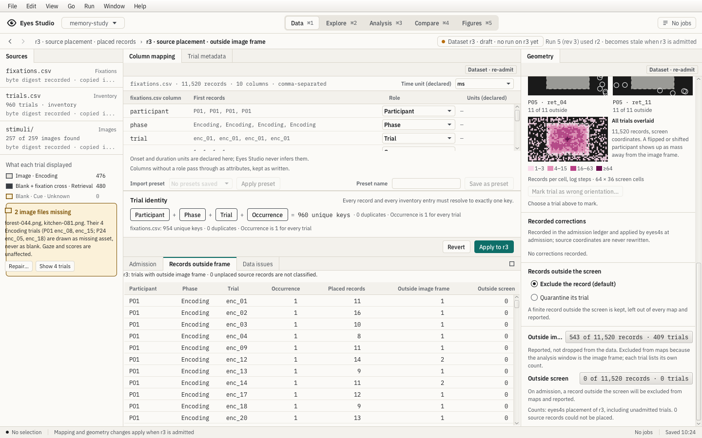
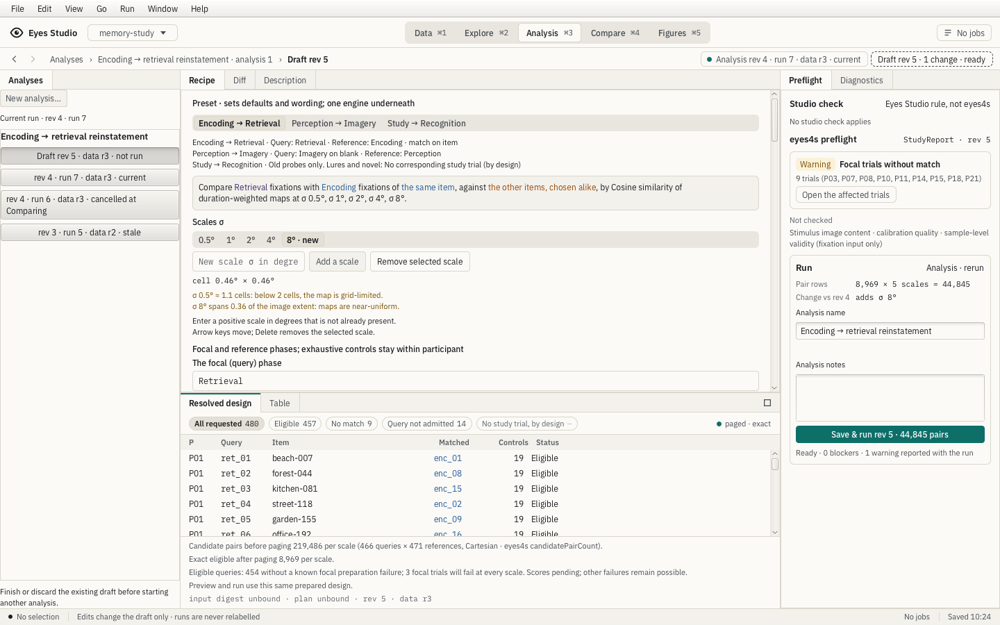
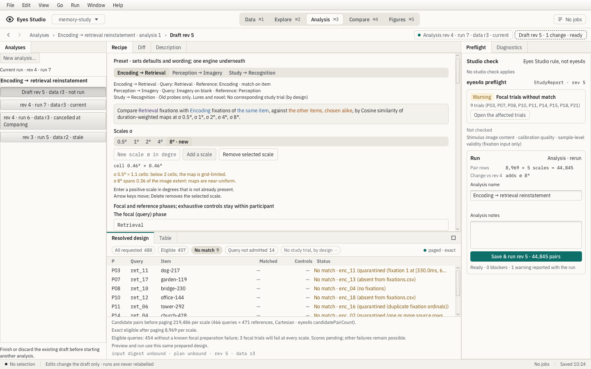
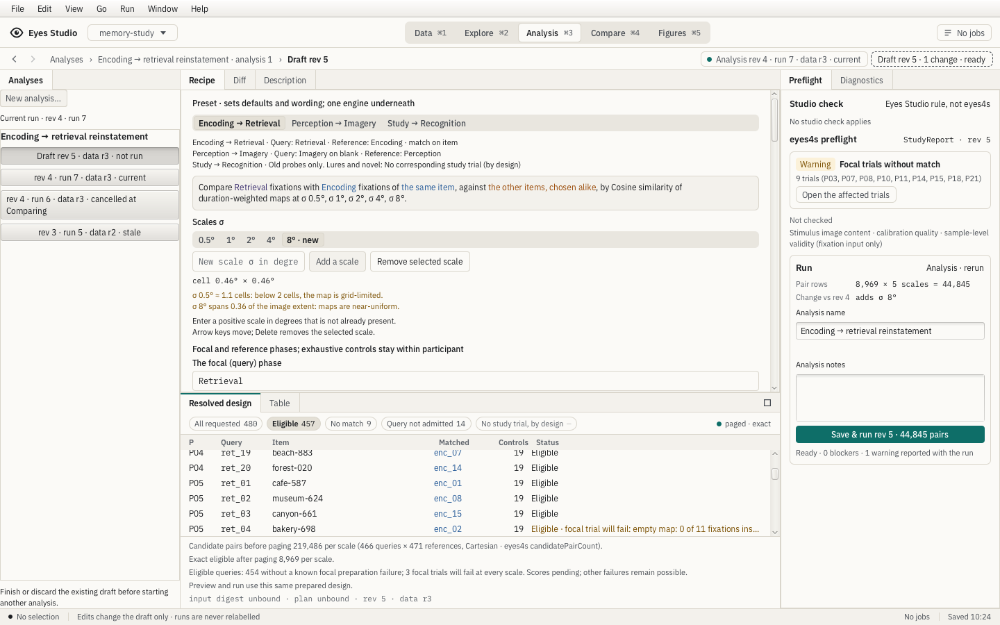
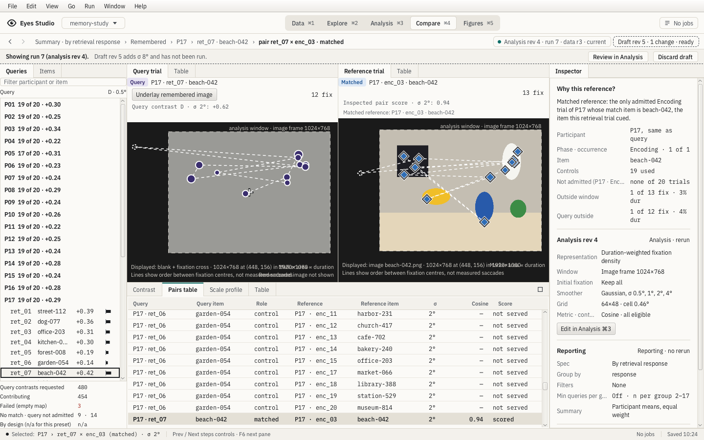

Data: current placement trials



Bounded review · 2026-10-20. Focused checks passed; full qualification and landing pending. These are public golden-fixture snapshots, not private study data.
The preview separates eligible queries from known focal preparation failures. Counts and trial rows use the current served placement. Native source declarations explain absent matches; they do not create matched pairs. Existing whole-board differences and native by-design classification remain open.
Source/capture hashes, checks and limits






